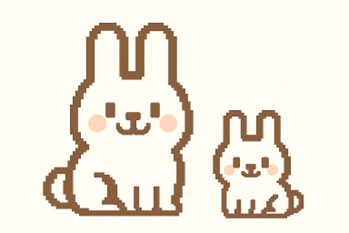

As bunnies get older, they might hop a little slower and need a bit more help to feel their best. Just like us, they can face some age-related quirks—maybe some creaky joints or extra nap time. With a few simple changes and lots of love, you can keep your fluffy friend feeling comfy, happy, and well cared for in their senior bunny days.
Spotting the Signs of Aging
- Thinning or graying fur
- Weight loss or reduced muscle mass
- Less active and more sleep
- Scaling or dandruff on the ears
- Vision or hearing changes
- Incontinence or litter box issues
- Stiffness, limping, or signs of arthritis
Creating a Senior-Friendly Environment
- Use rugs or mats for traction
- Switch to litter boxes with low entry points
- Add extra padding where your bunny rests
- Keep food, water, and litter close by
- Provide a calm, quiet environment
Diet & Hydration Tips
- Feed unlimited grass hay and soft leafy greens
- Use senior-formula pellets in small portions
- Soak greens or offer pureed veggies for easier eating
- Encourage water intake with flavored or soaked foods
- Monitor weight and appetite closely
Encouraging Movement & Comfort
- Offer safe toys and puzzles for light activity
- Support joints with soft bedding and warm compresses
- Consider joint supplements or vet-prescribed medications
- Provide gentle massages and social time
Supporting Special Needs
- Work with your vet on arthritis, blindness, or deafness
- Keep setups consistent and easy to navigate
- Communicate with sound, scent, or gentle touch
- Make grooming and handling less stressful